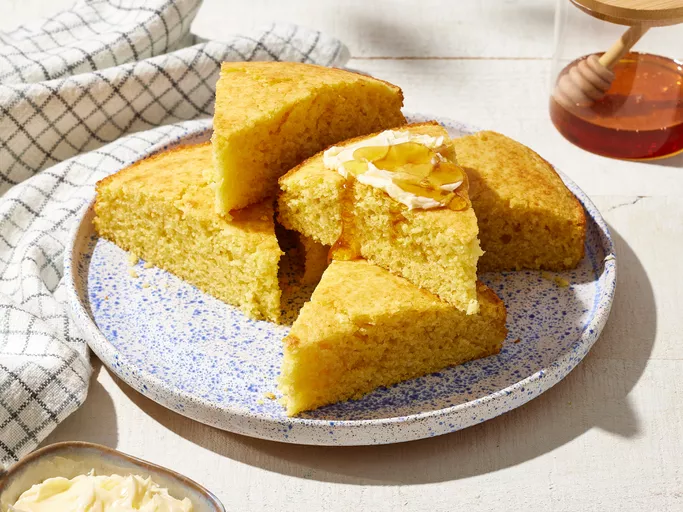

Cornbread

This cornbread recipe is made from scratch with no mix. It’s a real treat with chili, ribs, or barbecued chicken.
· · · Method · · ·
1 cup (120g)all-purpose flour1 cup (156g)yellow cornmeal½ cup (100g)white sugar2½ tspbaking powder1 tspsalt1 cupmilk⅓ cupvegetable oil1large egg
Preheat the oven to 375 degrees F (190 degrees C). Lightly grease a 9-inch round cake pan.
Whisk flour, cornmeal, sugar, baking powder, and salt together in a large bowl.
Add milk, vegetable oil, and egg; whisk until well combined.
Pour batter into the prepared pan.
Bake in the preheated oven until a toothpick inserted into the center of the pan comes out clean, about 25 minutes.
Slice and enjoy!